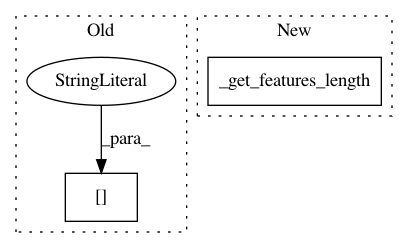

97aba3c01eaebd8123974eea22b0ddb739a51555,opennmt/models/sequence_to_sequence.py,SequenceToSequence,_build,#SequenceToSequence#Any#Any#Any#Any#,99
Before Change
encoder_outputs, encoder_state, encoder_sequence_length = self.encoder.encode(
source_inputs,
sequence_length=features["length"],
mode=mode)
with tf.variable_scope("decoder") as decoder_scope:
After Change
return dataset, process_fn, padded_shapes_fn
def _build(self, features, labels, params, mode):
features_length = self._get_features_length(features)
batch_size = tf.shape(features_length)[0]
with tf.variable_scope("encoder"):
source_inputs = self.source_inputter.transform_data(
In pattern: SUPERPATTERN
Frequency: 3
Non-data size: 2
Instances
Project Name: OpenNMT/OpenNMT-tf
Commit Name: 97aba3c01eaebd8123974eea22b0ddb739a51555
Time: 2017-09-25
Author: guillaume.klein@systrangroup.com
File Name: opennmt/models/sequence_to_sequence.py
Class Name: SequenceToSequence
Method Name: _build
Project Name: OpenNMT/OpenNMT-tf
Commit Name: 97aba3c01eaebd8123974eea22b0ddb739a51555
Time: 2017-09-25
Author: guillaume.klein@systrangroup.com
File Name: opennmt/models/sequence_classifier.py
Class Name: SequenceClassifier
Method Name: _build
Project Name: OpenNMT/OpenNMT-tf
Commit Name: 97aba3c01eaebd8123974eea22b0ddb739a51555
Time: 2017-09-25
Author: guillaume.klein@systrangroup.com
File Name: opennmt/models/sequence_tagger.py
Class Name: SequenceTagger
Method Name: _build